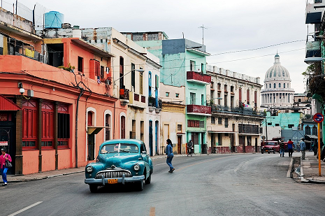
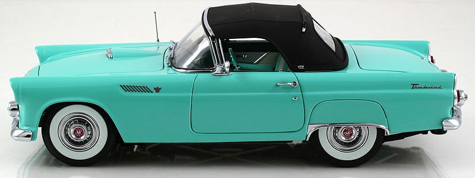
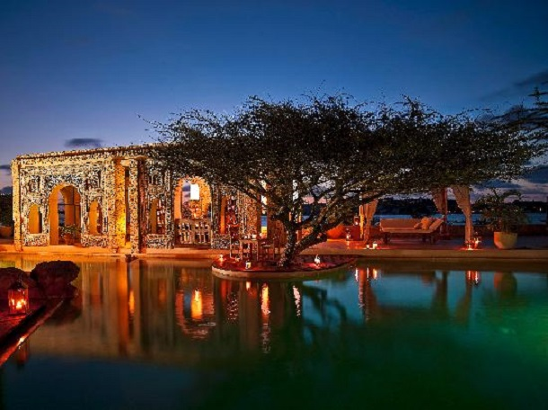
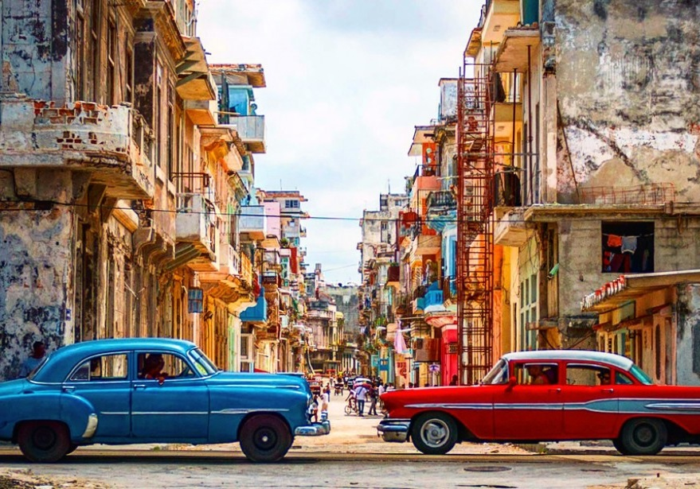
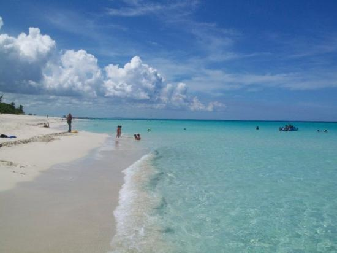
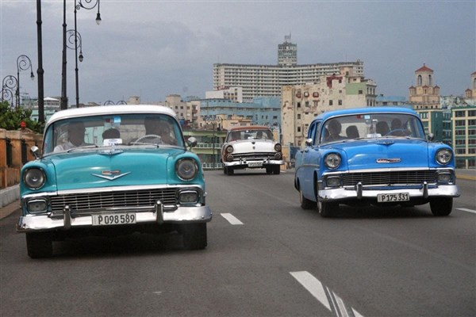
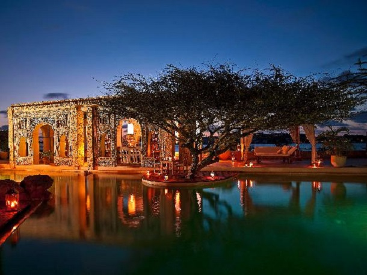
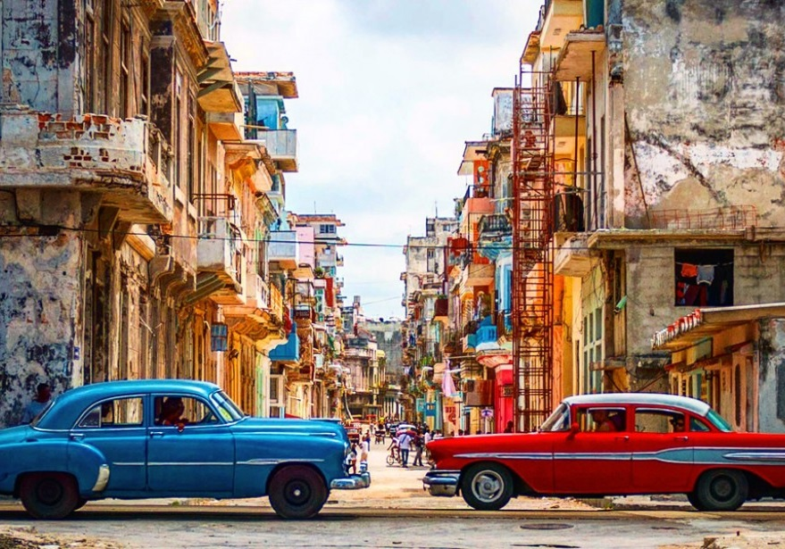
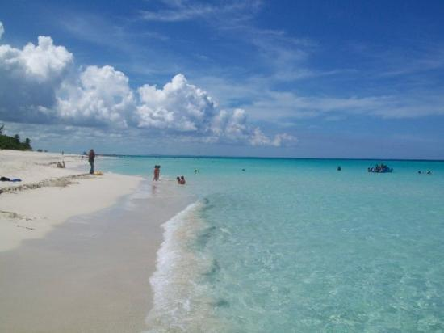
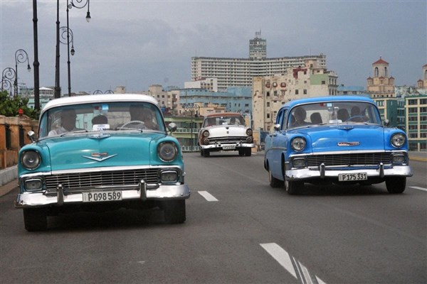

It always had the allure a forbidden fruit. I love it for its uniqueness, creativity and
survivalist spirit. I love it because, despite 60 years of setbacks, it remains an upbeat and
open place. Walk down the street with a Cuban friend and, within one block, you’ll have received
five handshakes, four kisses, three greetings of ‘dime hermano!’ and at least two invites into
someone’s house.
Read more >>
1,920
Trips
271
Venues
3,321
Tickets Sold
2,912
Reviews
What Cuba is about
Cuba is like a prince in a poor man’s coat; behind the sometimes shabby facades,
gold dust lingers. It’s these rich dichotomies that make travel here the exciting.
Trapped in a time warp and reeling from an economic embargo that has grated for more than
half a century, this is a country where you can wave goodbye to everyday assumptions and
expect the unexpected.
Read more >>

Historical Heritage
Bereft of modern interference, Cuba’s colonial
cities haven’t changed much since musket-toting pirates stalked the Caribbean.
Atmosphere and architecture is particularly stirring in Havana, Trinidad and
Camagüey where grandiose squares and cobbled streets tell erstwhile tales of
opulence and intrigue.
Astonishing Beaches
Whether you’re staying in a luxury
hotel in Havana or exploring the rural charms of Vinales, in some ways it’s all the real
Cuba. Some travellers might opt to miss the beach resort town of Varadero, but this
energetic beachside paradise should still be an option to consider as part of your Cuban
travel plans.
The Cadillacs of Cuba
Hover for more info

Convertible Roof
The American trade embargo with Cuba in 1960 had the effect of instantly separating thousands
of 1940s and 1950s Detroit-built cars from their spare parts supply. Convertibles were always
popular, thanks to year-round tropical weather. The place for posing with your ride is hard to miss
in Havana. The squares around Capitolio, a flattering copy of Washington’s Capitol building,
are lined with 50-year-old American cars during daylight hours.
Cuba in Photos
When you think of Carribean, you’re probably not thinking of Cuba. It’s the lone acacia
silhouetted against a horizon stretching into eternity. It’s the snow-capped mountain almost on the equator
and within sight of harsh deserts. It’s the lush, palm-fringed coastline of the Indian Ocean, it’s the Great
Rift Valley that once threatened to tear the continent asunder, and it’s the dense forests reminiscent of
the continent’s heart. In short, Kenya is a country of epic landforms that stir our deepest longings
for this very special continent.
 






